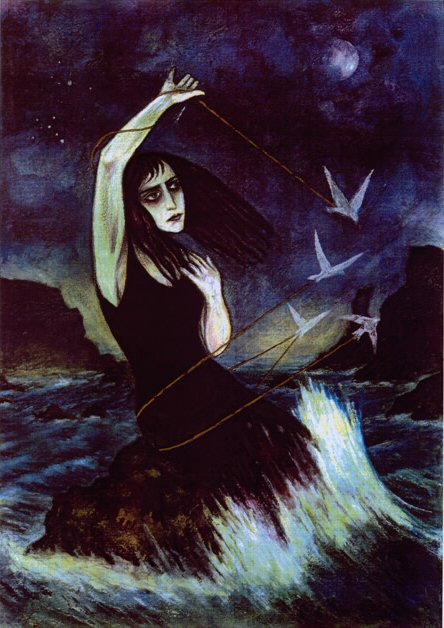

Sappho - Poetic Fragments

Fragment 1
Deathless Aphrodite - Daughter of Zeus and maker of snares -
On your florid throne, hear me!
My lady, do not subdue my heart by anguish and pain
But come to me as when before
You heard my distant cry, and listened:
Leaving, with your golden chariot yoked, your father's house
To move beautiful sparrows swift with a whirling of wings
As from heaven you came to this dark earth through middle air
And so swiftly arrived.
Then you my goddess with your immortal lips smiling
Would ask what now afflicts me, why again
I am calling and what now I with my restive heart
Desired:
Whom now shall I beguile
To bring you to her love?
Who now injures you, Sappho?
For if she flees, soon shall she chase
And, rejecting gifts, soon shall she give.
If she does not love you, she shall do so soon
Whatsoever is her will.
Come to me now to end this consuming pain
Bringing what my heart desires to be brought:
Be yourself my ally in this fight.

Previous - Next